Questão 3 - Item 01 - Nível segundo grau
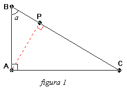 |
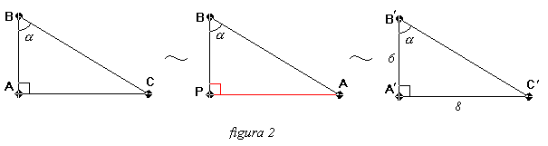 |
A altura relativa a hipotenusa do triângulo ABC está representada na figura 1.
Na figura 2 temos a relação entre os triângulos ABC, PBA e A’B’C’.
É fácil perceber a semelhança entre os triângulos PBC e ABC, pois ambos são triângulo retângulos e possuem um ângulo comum (ângulo α).
Da semelhança, mostrada na figura 2, entre os triângulos PBA e A’B’C’, temos:
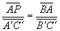
Clique aqui para a Justificativamas:
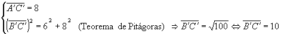
Substituindo na proporção anterior:
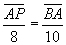
De onde chegamos a:
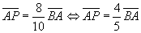
IDa semelhança entre os triângulos PBA e ABC temos:
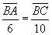
De onde chegamos a:
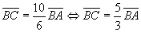
IIMas a área do triângulo ABC é dada por:
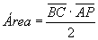
A área do triângulo ABC é dada (6 u. a.) e
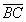
e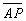
estão expressas em I e II; substituíndo na fórmula acima, teremos: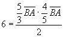
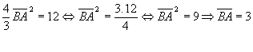
Substituindo, na expressão I, o valor encontrado para
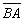
: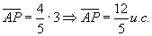
Conclusão: O item (01) é falso.
 Voltar
Voltar
Nota
Dois triângulos semelhantes possuem as medidas dos seus lados correspondentes proporcionais.